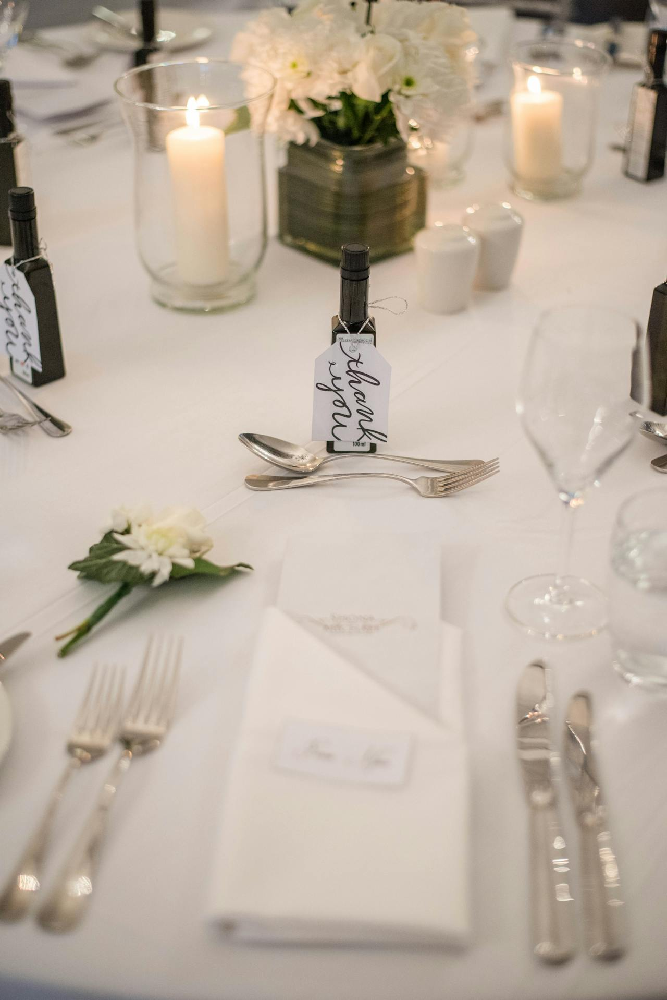
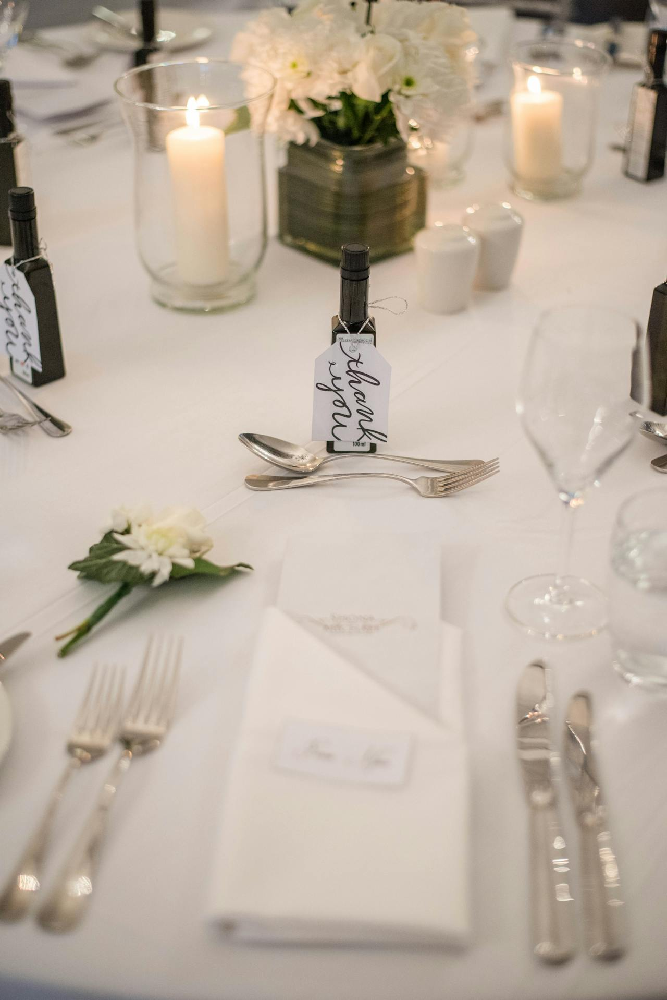
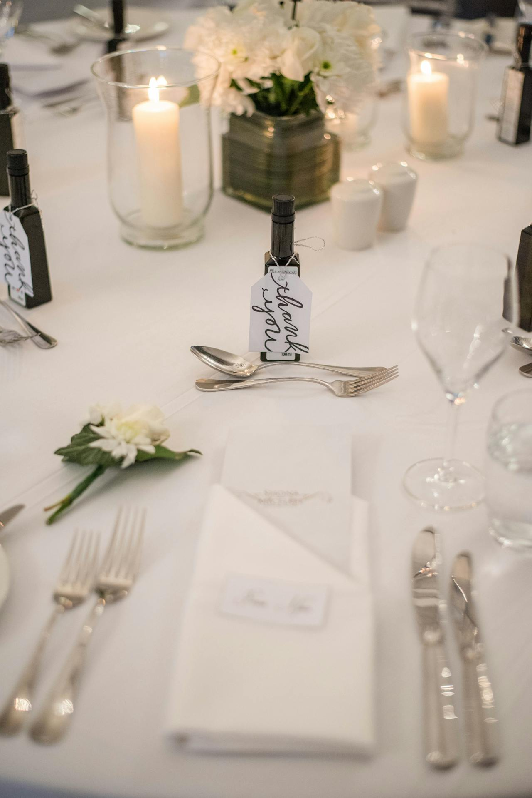

Find Pictures Of Our Customers From Events Hosted By THE SPICY SPOON
You can see some images of The Spicy Spoon restaurant and its dishes from different sources. Here are some examples:
 



The Spicy Spoon is a family-owned restaurant that serves authentic Indian cuisine with a modern twist. We use fresh ingredients, aromatic spices, and traditional recipes to create mouth-watering dishes that will satisfy your taste buds and your soul. Whether you’re looking for a cozy lunch, a romantic dinner, or a festive celebration, we have something for everyone. Try our signature butter chicken, our vegan-friendly dal makhani, or our gluten-free naan bread. Don’t forget to pair your meal with a refreshing mango lassi, a smooth chai tea, or a glass of wine from our curated selection. We are open for dine-in, takeout, and delivery. You can also book our private dining room for your special occasions. We look forward to serving you soon!
To make a reservation at THE SPICY SPOON, You can use this link RESERVATIONS. You can also call the restaurant directly at (416) 555-1234. Please note that reservations are recommended for weekends and holidays, as the restaurant can get very busy. We hope to see you soon at The Spicy Spoon!
The Spicy Spoon is a restaurant that serves a variety of dishes from different cuisines, such as Indian, Thai, and Pakistani. It has locations in Toronto, Portland, and Adelaide, as well as a Facebook page for its Morbi branch. The restaurant is known for its spicy and flavorful food, as well as its friendly service and cozy atmosphere. Some of its popular dishes include chili, Thai green curry, red spicy Indian curry, tom yum fried rice, and boneless wings. You can order online, dine in, or take out from The Spicy Spoon.
You can see some images of The Spicy Spoon restaurant and its dishes from different sources. Here are some examples:

There are different ways to contact The Spicy Spoon restaurant, depending on which location you want to reach. Here are some of the contact details for each location: